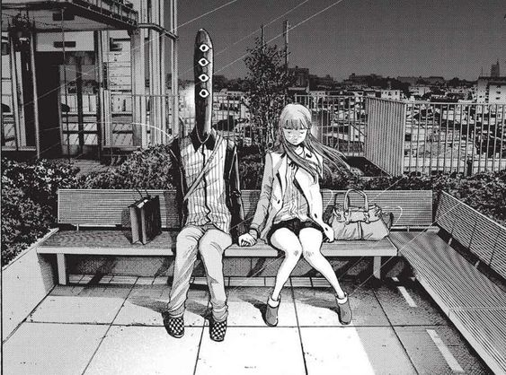
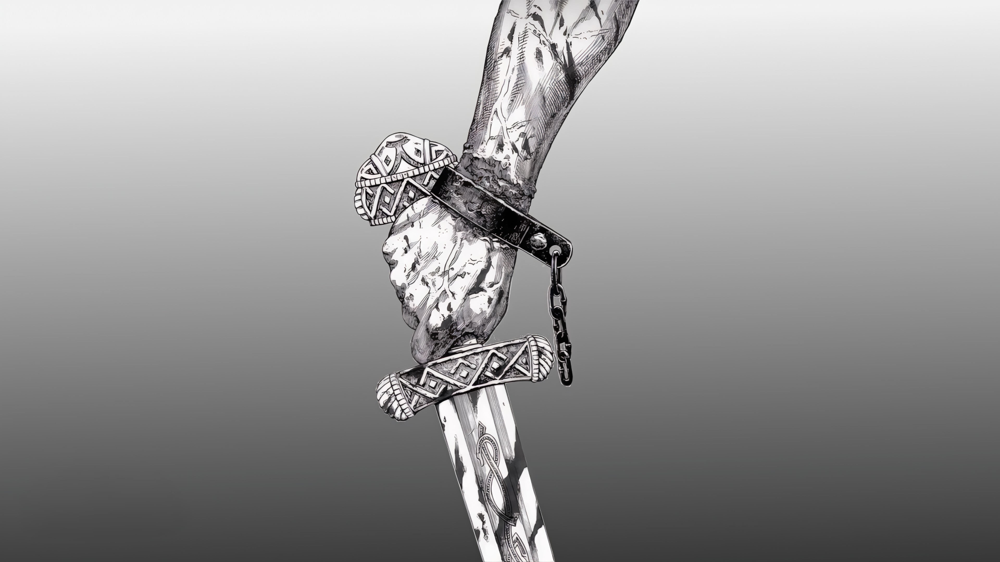

Oyasumi Punpun
Toca temas como el crecimiento, el amor, la pérdida, la soledad y la esperanza de una manera honesta y profunda, dejando una marca en los corazones de los lectores.La narrativa de Oyasumi Punpun es una verdadera obra de arte.

Vinland Saga
Thorfinn existió en la vida real por el nombre de Thorfinn Karlsefni, aunque lo cierto es que había bastantes aspectos que cambiaban respecto a lo que conocemos. Para comenzar, hay que decir que el Thorfinn de la vida real no era un guerrero, sino que más bien era una especie de explorador.

Vinland Saga
Thorkell. El último del trío de nuevos sirvientes de Canuto al final de la temporada 1 (junto con Thorfinn y Askeladd), Thorkell puede ser el guerrero más poderoso de todo el elenco de Vinland Saga luego de la muerte de Thors.